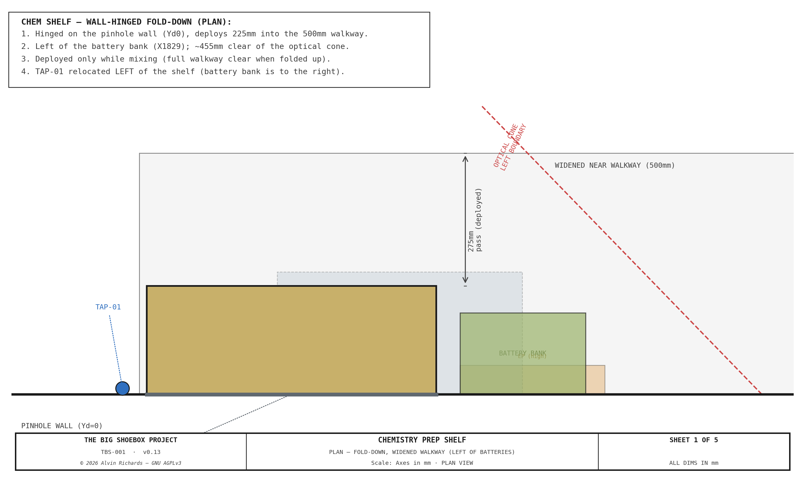
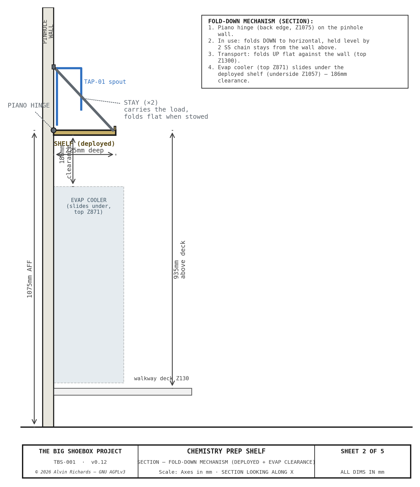
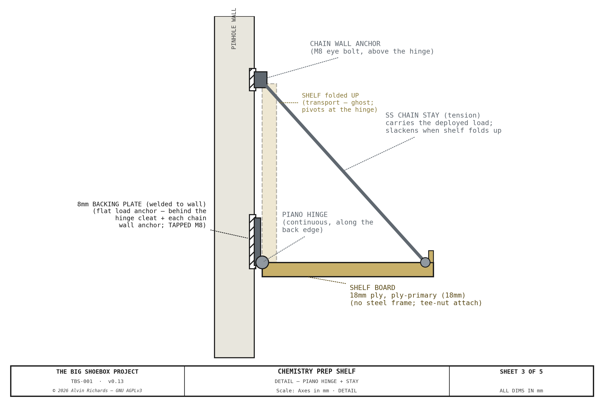

Chemistry Prep Shelf¶
1. Purpose¶
Cyanotype processing requires a clean, stable work surface for:
- Mixing sensitizer chemistry (ammonium iron(III) oxalate + potassium ferricyanide)
- Measuring and dispensing solutions (graduated cylinders, digital scale)
- Coating muslin substrate with sensitizer (roller tray, foam roller)
- Staging materials (bottles, pH meter, gloves, timer)
- Post-exposure citric acid wash preparation
Chemistry is mixed before exposure, so the shelf does not need to be permanently deployed. It is a wall-hinged fold-down in the widened near walkway: folded DOWN to a counter-height work surface while mixing, and folded UP flat against the pinhole wall for transport and during exposure. Because it is only deployed while the film plane is parked, it is fully decoupled from the film-plane swing.
A dedicated water tap (TAP-01) on the pinhole wall provides filtered water from the blue supply line for chemistry mixing and wash-down. It is relocated to the left of the shelf (the battery bank is to the right); the branch riser tops at the stowed-shelf height and the spout reaches over the shelf to fill containers. Ball valve BV-06 on the ¾" branch gives shut-off control from the prep position.
2. Location and Spatial Constraints¶
The shelf is in the widened near walkway (500 mm deep), hinged on the pinhole wall left of the battery bank. Deployed, it projects 300 mm into the walkway. The operator stands on the widened walkway and works facing the wall. When folded up, the full walkway is clear.

2.1 Why fold-down (film-plane swing) + optical cone¶
Film-plane swing. The fold-down removes the conflict with the film plane mechanism: the shelf is only deployed while mixing (film plane parked), and is folded flat against the wall whenever the plane tilts/swings during exposure. No swing restriction is imposed.
Optical cone. Even deployed, the shelf is clear of the optical cone. Its right edge sits left of the cone's left boundary at the shelf's deepest point (Yd=300):
cone_left(300) = PH_X + (FP_X_L − PH_X) × 300 / FP_Y
= 2,399 + (150 − 2,399) × 300 / 2,262
= 2,399 − 298 = 2,101 mm
→ the shelf right edge is ~321 mm outside (left of) the cone. No vignetting at any film-plane position.
2.2 Spatial Constraints¶
| Constraint | Value |
|---|---|
| Deployed footprint | Hinged on the pinhole wall, projects 300 mm |
| Stowed (transport) | Vertical against the wall, ~25 mm proud |
| Work surface height | 945 mm above the 130 mm walkway deck |
| Walkway (widened) | 500 mm deep — ~200 mm pass when deployed, full clear when stowed |
| Evap cooler (stow) | Slides under the deployed shelf |
| Optical cone | ~321 mm clear |
3. Design Specification¶
3.1 Shelf board¶
| Parameter | Value |
|---|---|
| Width (X) | 600 mm |
| Depth (Yd, deployed) | 300 mm |
| Work surface height | 945 mm above the walkway deck |
| Thickness | 22 mm (18 mm phenolic ply + 4 mm perimeter frame) |
| Work surface area | 600 × 300 = 0.18 m² |
Work surface: 18 mm phenolic-faced plywood (concrete form ply) — chemical-resistant to cyanotype solutions and pH 3–4 citric acid; smooth, non-absorbent, wipe-clean.
Perimeter frame: 25×25×3 mm mild steel SHS welded into a 600×300 mm rectangle with corner gussets; the ply sits flush inside it. A 15 mm spill-guard lip on the three free edges retains bottles/items. Flat black powder coat.
3.2 Fold-down mechanism¶

Piano hinge: a continuous steel piano hinge runs the full 600 mm back edge, bolted to a mounting cleat on the pinhole wall. The shelf swings between horizontal (deployed) and vertical-up (stowed) about this hinge.
Stays: two stays run from wall anchors ~230 mm above the hinge to the shelf's front corners. Deployed, they hold the board level and carry the shelf + chemistry load; when the shelf folds up they fold flat against the wall. Either a pair of folding fold-flat shelf brackets or diagonal struts/chains may be used — both lock the board level.
Transport latch: a simple over-center latch (or barrel bolt) at the top secures the folded-up board against the wall.

3.3 Load Rating¶
| Parameter | Value |
|---|---|
| Design load | 25 kg (full bottle, cylinders, roller tray, scale, staging) |
| Carried by | 2 stays + the piano hinge (hinge reacts the back edge) |
| Load per stay | ~12.5 kg + shelf self-weight share — well within a folding bracket's rating (typ. 30–50 kg each) |
| Hinge | Continuous piano hinge along 600 mm — distributes the back-edge reaction |
The fold-down hardware is comfortably rated for the light mixing load.
3.4 Leveling¶
Slotted holes in the stay wall anchors (or adjustable folding brackets) give ±5 mm at each front corner; level the board with a spirit level on first install, then lock.
4. Transport Mode¶
The shelf folds UP flat against the pinhole wall and latches.
| Check | Status |
|---|---|
| Walkway clearance | Folded up, ~25 mm proud of the wall — full walkway clear ✓ |
| Film-plane clearance | Folded flat — never in the swing envelope ✓ |
| Overhead clearance | 425mm below the cable trunking ✓ |
| Evap stow | Evap tucks below the folded board ✓ |
| Vibration | Board latched flat against the wall; no loose span ✓ |
5. Operator Access¶
The operator stands on the widened near walkway at about the shelf midpoint, facing the wall. The deployed surface (945 mm above the deck) is ergonomic counter height; the full depth is reachable. The tap (left of the shelf) fills containers staged on the board.
When deployed, the 300 mm board leaves ~200 mm of the 500 mm walkway behind it — enough for the operator to work but not for through-traffic; this is acceptable because the shelf is only down while mixing. Folded up, the walkway is fully clear in both directions.
6. Assembly Sequence¶
- Fabricate the shelf frame: weld a 25×25×3 mm SHS 600×300 mm rectangle with corner gussets.
- Weld the 15 mm spill-guard lip to the three free edges; weld the transport-latch keeper.
- Insert the 18 mm phenolic ply panel; secure with M5 CSK screws from the frame underside.
- Bolt the wall mounting cleat to the pinhole wall at Z=1075 (X=1180–1780), into the ribs/backing.
- Bolt the continuous piano hinge to the cleat and to the shelf back edge.
- Fit the two stay wall anchors ~230 mm above the hinge (slotted for leveling).
- Fit the two stays (folding brackets or struts) to the anchors and the shelf front corners.
- Deploy, level with a spirit level, lock the stay adjustment.
- Fit the transport latch; verify the board folds up flat and latches clear of the wall equipment.
- Verify: deployed level + rigid under load; folded-up clear of the evap stow and walkway.
7. Parts List¶
| Item | Spec | Qty | Supplier | Est. cost |
|---|---|---|---|---|
| Phenolic-faced plywood, 18 mm | cut to 300×600 mm | 1 ea | Home Depot / lumber yard | $60 |
| 25×25×3 mm steel SHS | 6 m (frame + spill lip) | 1 lot | Online Metals / Metal Supermarkets | $30 |
| Continuous (piano) hinge, 600 mm | stainless/steel, ~32 mm leaf | 1 ea | McMaster-Carr | $20 |
| Folding shelf stays/brackets | fold-flat, ~30–50 kg rating | 2 ea | Amazon / McMaster-Carr | $24 |
| Wall mounting cleat + anchors | 6 mm steel cleat + 2 stay anchors (slotted) | 1 lot | Local fab | $18 |
| M8 wall bolts + washers/nuts | hinge cleat + stay anchors into the wall ribs | 12 ea | McMaster-Carr | $12 |
| Transport latch (over-center/barrel) | secures the folded board | 1 ea | Amazon | $8 |
| M5×16 mm CSK screws | ply panel attachment | 8 ea | McMaster-Carr | $4 |
| Corner gusset plate, 3 mm | 50×50 mm triangular | 4 ea | Steel offcut | $5 |
| Flat black epoxy spray paint | frame + hardware finish | 1 can | Hardware store | $12 |
| ½" HDPE pipe (tap relocation) | extend the blue supply trunk ~1.3 m left to TAP-01 | 1 lot | Irrigation supply | $10 |
| Shelf total | $203 |
The relocated TAP-01 + BV-06 hardware itself is unchanged (carried in the water-system BOM); only the ~1.3 m trunk extension is added here.
8. Maintenance¶
| Interval | Task |
|---|---|
| Before each session | Deploy + check level; wipe the surface; inspect the spill lip for residue |
| Before each session | Confirm the stays lock positively and the hinge swings freely |
| Monthly | Inspect the hinge, stays, and wall bolts for corrosion/tightness |
| Before transport | Fold up + latch; confirm clear of the evap stow and walkway |
| After transport | Re-deploy and re-check level |
9. Source References¶
- ISO 668:2020 — Series 1 freight containers: dimensions and ratings.
- Walkway System Report — Walkway deck height and the widened near-walkway section.
- Equipment Layout Report — Optical cone clearance and pinhole-wall zone definitions.
© 2026 Alvin Richards — Released under GNU AGPLv3